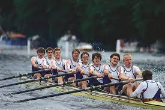

- One of my biggest hobbies is video games. I used to play game battles,
online tournaments, anything. The game I specifically play the most is
Apex Legends. I'm fortunate enough to say I'm in the top 0.5% and that
I've won a little money from playing. So I could be considered semi-pro
in some eyes

-
Another hobby I really enjoy is American Football. I've grown up watching
the sport my whole life. My favorite team is the Green Bay Packers. I've
been fortunate enough to be able to go see a few games in person
-
One of my favorite sports to play is actually rowing. I feel into the sport in
highschool after getting a few knee surgeries. Due to those injuries I wasn't able
to play sports like football or basketball. So through rowing I was able to keep a
strong sense of competition still
